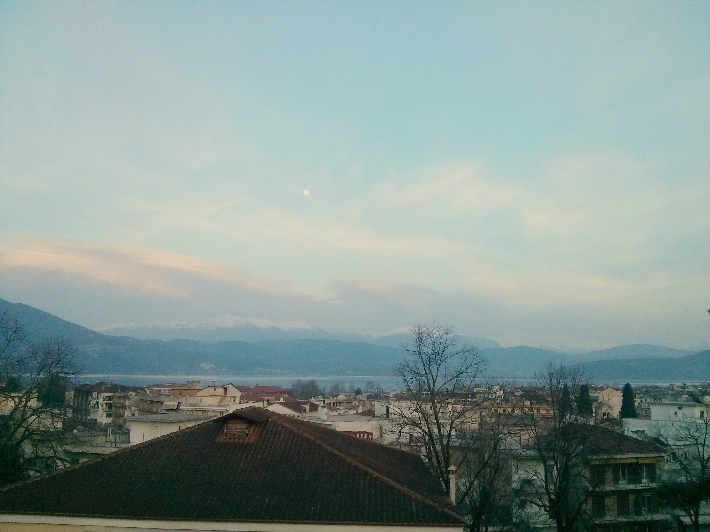
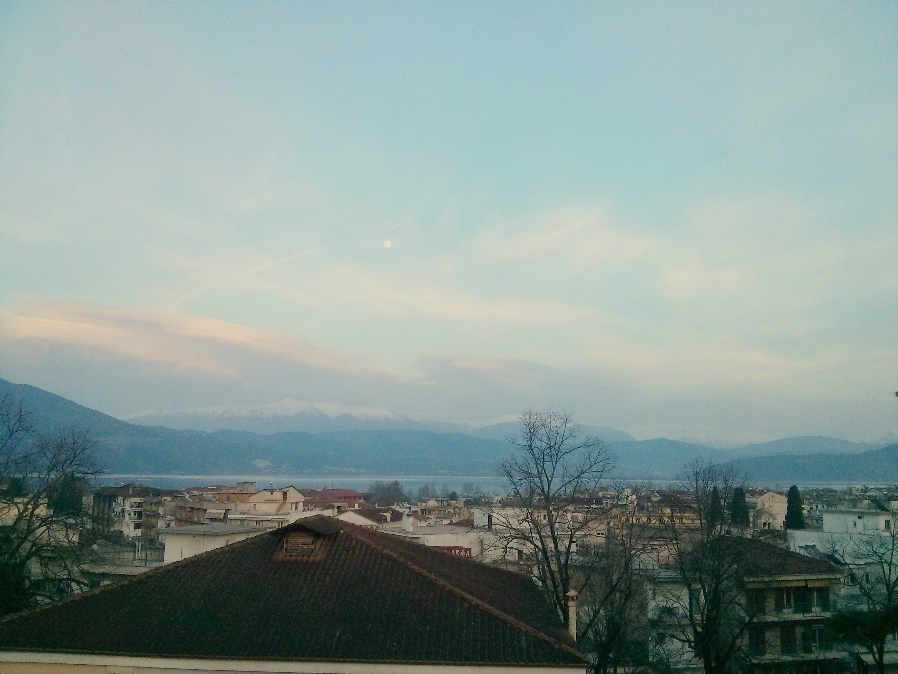
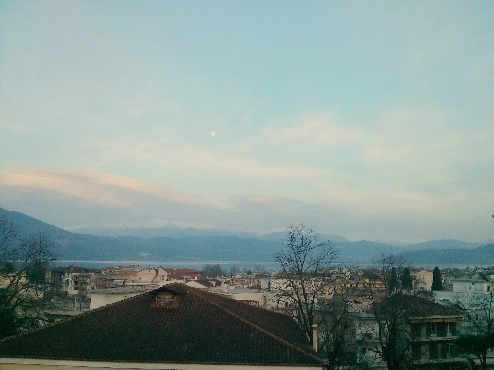

Programmer, web designer, foodie, IEEE SB of UOI, Code it Like a Girl grad
Είμαι και εγώ κάπως καλλιτεχνική φύση! Take a look of the photos i have picked.
Μπορείς και εσύ όμως να μου στείλεις τις φωτογραφίες που σου αρέσουν
και θα σου τις ανεβάζω εγώ σε αυτό εδώ το site!
